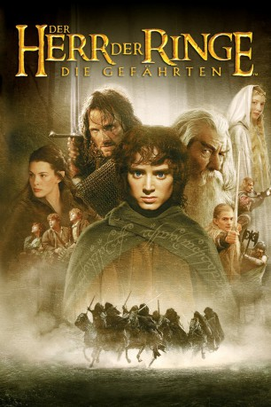

Auszeichnungen: 4 Oscars gewonnen für 9 Oscars nominiert 1 BAFTA-Awards gewonnen
 gesehen am 01.11.2015
gesehen am 01.11.2015Alternativ: The Lord of the Rings: The Fellowship of the Ring
Auszeichnungen: 4 Oscars gewonnen für 9 Oscars nominiert 1 BAFTA-Awards gewonnen gesehen am 01.11.2015
 
 IMDB-Wertung: 8.8 / 10
IMDB-Wertung: 8.8 / 10  IMDB-TOP-Platzierung: 11
IMDB-TOP-Platzierung: 11  Metascore:
Metascore: 
Dem Hobbit Bilbo Beutlin fällt zufällig ein machtvoller Ring in die kleinen Hände. Dieses Schmuckstück erlaubte es dem finsteren Herrscher Sauron einst, die Welt zu unterjochen. Der Ring schien über Jahrhunderte verloren, bis Bilbo ihn an sich nahm und seinen "Schatz" sechzig Jahre lang bewahrte. An seinem 111. Geburtstag gibt er ihn schweren Herzens an seinen Neffen Frodo weiter und verlässt seine Heimat Mittelerde. Für den jungen Hobbit Frodo wird der Ring jedoch zur schweren Bürde. Der böse Geist Saurons, der in dem "Einen" gefangen ist, wird immer stärker. Frodo bleibt nur eine Möglichkeit: Er muss ihn vernichten. Allerdings ist das nicht gerade einfach. Nur in den ewigen Feuern des Schicksalsberges im Lande Mordor, wo der Ring geschmiedet wurde, kann er auch vernichtet werden. Doch bis dahin muss Frodo an der Seite des Zauberers Gandalf und seiner Gefährten durch Feindesland ziehen, immer verfolgt von Saurons Lakaien...
Jahr: 2001
Dauer: 178 Minuten
FSK: 16
Land: Neuseeland Studio: Warner Bros.Tonspuren: DTS-HD - ,
Untertitel: Deutsch, Englisch,
Auflösung: 1080p (1920x1080) Größe: 55705 MB
Genre: Drama, Abenteuer, Fantasy
Regisseur:  Peter Jackson
Peter Jackson
Drehbuch: J.R.R. Tolkien, Fran Walsh, Philippa Boyens, Peter Jackson
Soundtrack: Howard Shore
Darsteller:
 Sean Astin als Sam
Sean Astin als Sam Sala Baker als Sauron
Sala Baker als Sauron Sean Bean als Boromir
Sean Bean als Boromir Cate Blanchett als Galadriel
Cate Blanchett als Galadriel Orlando Bloom als Legolas
Orlando Bloom als Legolas Billy Boyd als Pippin
Billy Boyd als Pippin Marton Csokas als Celeborn
Marton Csokas als Celeborn Ian Holm als Bilbo
Ian Holm als Bilbo Christopher Lee als Saruman
Christopher Lee als Saruman Lawrence Makoare als Lurtz
Lawrence Makoare als Lurtz Andy Serkis als Gollum
Andy Serkis als Gollum Ian McKellen als Gandalf
Ian McKellen als Gandalf Dominic Monaghan als Merry
Dominic Monaghan als Merry Viggo Mortensen als Aragorn
Viggo Mortensen als Aragorn John Rhys-Davies als Gimli
John Rhys-Davies als Gimli Liv Tyler als Arwen
Liv Tyler als Arwen Hugo Weaving als Elrond
Hugo Weaving als Elrond Elijah Wood als Frodo
Elijah Wood als Frodo Phil Grieve als Hero Orcs / Goblins / Uruks / Ringwraiths
Phil Grieve als Hero Orcs / Goblins / Uruks / Ringwraiths Sabine Crossen als Rivendell Elf , uncredited
Sabine Crossen als Rivendell Elf , uncredited Peter Jackson als Albert Dreary , uncredited
Peter Jackson als Albert Dreary , uncredited Shane Rangi als Witch-king , uncredited
Shane Rangi als Witch-king , uncreditedDatei: X:\6-Hexalogie(A-Z)\Herr der Ringe - Hobbit\Herr der Ringe 1 - Die Gefährten (2001, FSK16, 1920x1080).mkv seit 21.02.2015
Festplatte: HD Collection-3(N-Z)-6(A-Z)
 Es gibt insgesamt 12 Filme in der Gruppe '6-Hexalogie(A-Z)\Herr der Ringe - Hobbit'
Es gibt insgesamt 12 Filme in der Gruppe '6-Hexalogie(A-Z)\Herr der Ringe - Hobbit'